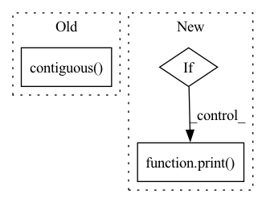

Pattern ID :34339
Before Change
outputs = model(inputs, masked_lm_labels=labels, position_ids=position_ids, token_type_ids=segment_ids)
else:
if args.model_type == "bart":
decoder_input_ids = labels[:, :-1].contiguous()
decoder_input_ids[decoder_input_ids == args.mlm_ignore_index] = tokenizer.pad_token_id
lm_labels = labels[:, 1:].clone()
outputs = model(inputs, labels=labels, lm_labels=lm_labels, decoder_input_ids=decoder_input_ids, position_ids=position_ids, token_type_ids=segment_ids)
else:After Change
lm_logits = outputs[0]
// debugging
if args.debug:
print()
print([tokenizer.decode(t, skip_special_tokens=True) for t in lm_logits.max(-1)[1]])
assert lm_logits.shape[-1] == model.config.vocab_size
In pattern: SUPERPATTERN
Frequency: 3
Non-data size: 3
Instances Fragment ID: 98447734
Project Name: stanford-oval/genienlp
Commit Name: b84a6548a69fd9f62652eed1c74fd4b1fdb8b65b
Time: 2020-11-15
Author: mehrad@stanford.edu
File Name: genienlp/paraphrase/run_lm_finetuning.py
M Class Name: AnonimousClass
N Class Name: AnonimousClass
M Method Name: evaluate(5)
N Method Name: evaluate(5)
M Parent Class:
N Parent Class:
M File Name: genienlp/paraphrase/run_lm_finetuning.py
N File Name: genienlp/paraphrase/run_lm_finetuning.py
M Start Line: 318
M End Line: 344
N Start Line: 330
N End Line: 369
Before Change
interval = 16
idx = torch.arange(0,T,interval)
rpn_inputs = inputs[:,:,idx]
rpn_inputs = rpn_inputs.transpose(1,2).contiguous() .view(N*(T//interval),C,H,W)
print(rpn_inputs.shape)
with torch.no_grad():
proposals = rpn(rpn_inputs)After Change
idx = torch.arange(0,T,interval)
rpn_inputs = inputs[:,:,idx].transpose(1,2).contiguous()
rpn_inputs = rpn_inputs.view(-1,C,H,W)
if len(inputs) < max_N:
print( "Modified from {} to {}".format(len(inputs), max_N))
rpn_inputs = torch.cat((rpn_inputs, rpn_inputs[:(max_N-len(inputs))*(T//interval)]))
with torch.no_grad():
proposals = rpn(rpn_inputs)
proposals = proposals.view(-1,T//interval,10,4) Fragment ID: 98447732
Project Name: jd730/strg
Commit Name: b98d2a6a9e626ae8be88646109eca0d53f1f4af5
Time: 2020-06-12
Author: jdhwang730@gmail.com
File Name: validation.py
M Class Name: AnonimousClass
N Class Name: AnonimousClass
M Method Name: val_epoch(9)
N Method Name: val_epoch(9)
M Parent Class:
N Parent Class:
M File Name: validation.py
N File Name: validation.py
M Start Line: 40
M End Line: 49
N Start Line: 34
N End Line: 62
Before Change
interval = 16
idx = torch.arange(0,T,interval)
rpn_inputs = inputs[:,:,idx]
rpn_inputs = rpn_inputs.transpose(1,2).contiguous() .view(N*(T//interval),C,H,W)
with torch.no_grad():
proposals = rpn(rpn_inputs)
proposals = proposals.view(N,T//interval,10,4)After Change
sample = torch.arange(0,T,interval)
rpn_inputs = inputs[:,:,sample].transpose(1,2).contiguous()
rpn_inputs = rpn_inputs.view(-1,C,H,W)
if len(inputs) < max_N:
print( "Modified from {} to {}".format(len(inputs), max_N))
rpn_inputs = torch.cat((rpn_inputs, rpn_inputs[:(max_N-len(inputs))*(T//interval)]))
with torch.no_grad():
proposals = rpn(rpn_inputs)
proposals = proposals.view(-1,T//interval,10,4) Fragment ID: 98447731
Project Name: jd730/strg
Commit Name: 439d8eb70d35c5cc16fdabda09a67e2149af8c8a
Time: 2020-06-12
Author: jdhwang730@gmail.com
File Name: training.py
M Class Name: AnonimousClass
N Class Name: AnonimousClass
M Method Name: train_epoch(12)
N Method Name: train_epoch(12)
M Parent Class:
N Parent Class:
M File Name: training.py
N File Name: training.py
M Start Line: 57
M End Line: 62
N Start Line: 50
N End Line: 76